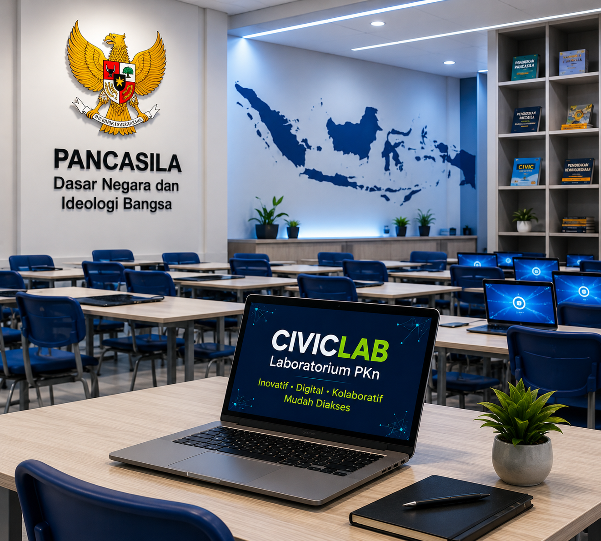

KEGIATAN
›Sosialisasi CivicLab kepada Mahasiswa
Pengenalan layanan Laboratorium PKn untuk mendukung pembelajaran.
Satu ruang untuk mengakses layanan laboratorium, bahan ajar, informasi fasilitas, dan sumber pembelajaran Pendidikan Kewarganegaraan.

Satu tempat untuk seluruh sumber pembelajaran.
Panduan penggunaan laboratorium yang tertib, aman, dan terdokumentasi.
Lihat SOP →Koleksi informasi fasilitas dan perangkat yang tersedia.
Buka E-Katalog →CivicLab hadir untuk mendukung layanan dan pembelajaran PKn yang inovatif, digital, kolaboratif, dan mudah diakses.
Pengenalan layanan Laboratorium PKn untuk mendukung pembelajaran.
Langkah inovatif dalam meningkatkan kualitas layanan laboratorium.
Penyediaan bahan ajar digital yang interaktif dan kontekstual.